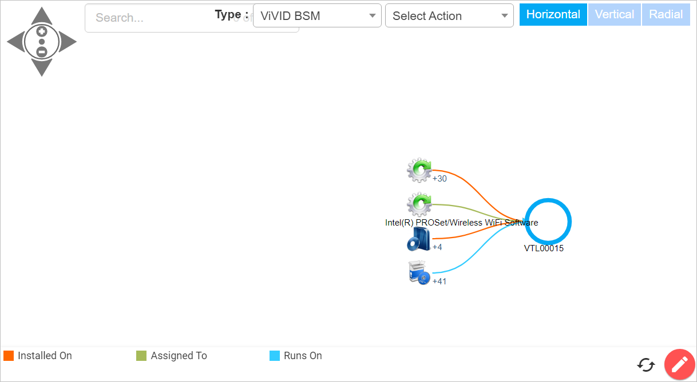
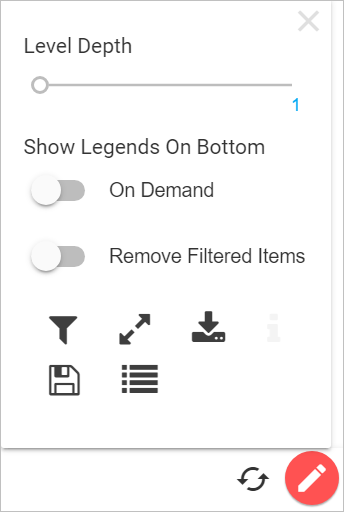

Business Service Map
Use the

Type. Click the drop-down list and select the type of view.
ADM View displays the graphical connection between the applications or between applications and configuration items based on the relationship Communicates With. Administrators can add relations manually. ADM is processed automatically when the discovered items are moved into the CMDB. SSH communication is ignored in the ADM.
Affected Business Application View displays the list of services/applications impacted due to an affected Business Service.
Communication View displays the graphical connection between the configuration items based on the relationship Communicates With. To view the list of Windows Host, click on the number. Grayed out machines/devices can be of different network or the devices that are not discovered by the Discovery application.
Infrastructure View displays the end-to-end visualization of a Server/Application infrastructure.
Network View displays the physical and non-physical connections among the assets and/or business services based on relationships.
Service Topology View displays the end-to-end visualization of a running service.
Select Actions. Click the drop-down list and select the action.
Rescan. When selected. displays the Rescan Now dialog box. Choose a Client and the Type of Scan. Then click Scan.

Host Check. When selected, displays the Check Host Reachability dialog box. Enter the IP Address and Choose a client, then click Scan.

Orientation. Select Horizontal, View or Radical to change the perspective of the map.
Refresh. Updates the display to reflect any map changes.
Additional Settings. Click the red circle with the pencil in the lower right corner of the map.

Level Depth. Specifies the number of levels deep to go to see the details. The maximum depth level is 5.
Show Legends On Bottom. Specifies where the legend is located and if the filtered items should be removed.
Filter. Filters the data in the map. In the Filter dialog box, select which items to display.
Full Screen. Toggles between full screen and normal view.
Download BSM. Displays the Download BSM View dialog box in which you specify what type of file to download. There must be data in order for the download to occur. Click either Save as PNG (image) or Save Data as Excel (spreadsheet), then click Download.
Save View. Saves the current view, which can be reloaded for reference at another time.
Load View. Loads any saved views.
Related Topics